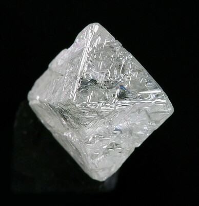

Διαμάντι: Η Μαγική Πέτρα του Κριού
Το Διαμάντι, το πιο σκληρό φυσικό υλικό, συνδέεται στενά με τον Κριό, αντικατοπτρίζοντας τη δύναμη, την ατρόμητη φύση και την επιμονή του. Ως πλανήτης-κυβερνήτης του Κριού ο Άρης, το Διαμάντι εκπέμπει ενέργεια και φλόγα, ενισχύοντας τη δράση και τη δυναμική προσωπικότητα του ζωδίου. Λέγεται ότι προσφέρει αδιαπέραστη προστασία και τονώνει την αυτοπεποίθηση.
Σύμφωνα με την αστρολογία, η φθορά του Διαμαντιού από έναν Κριό μπορεί να τον βοηθήσει να διατηρήσει την εστίαση στους στόχους του και να ξεπεράσει εμπόδια με την εγγενή του ορμή. Η λαμπρότητα του πετραδιού συμβολίζει επίσης το φωτεινό και πρωτοπόρο πνεύμα που χαρακτηρίζει τους γεννημένους κάτω από αυτό το ζώδιο. Είναι ένα σύμβολο αιώνιας αγάπης και αντοχής.
